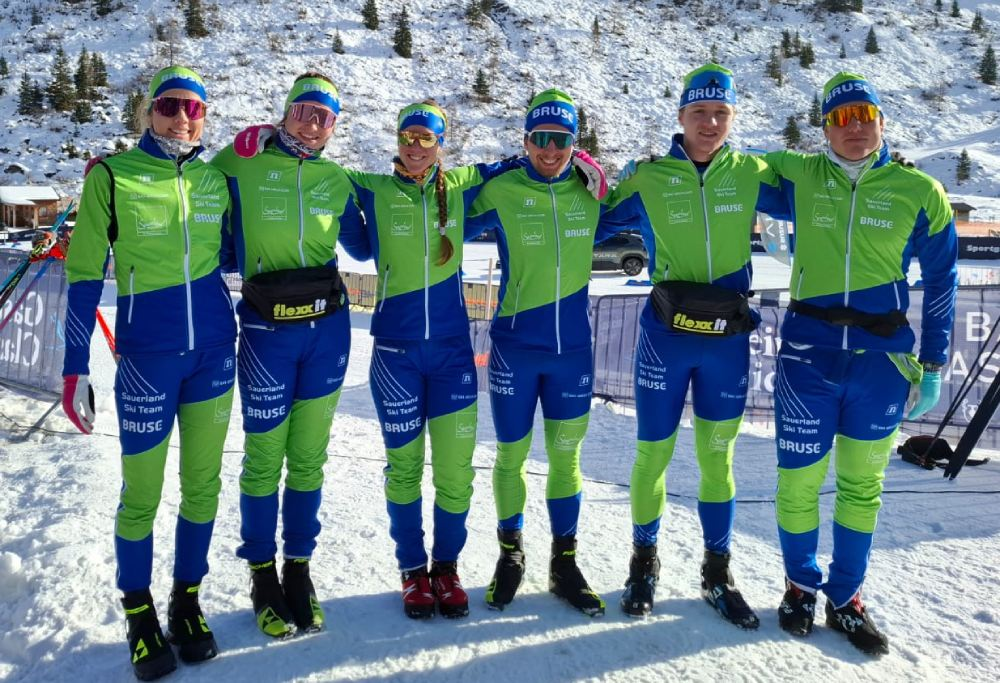
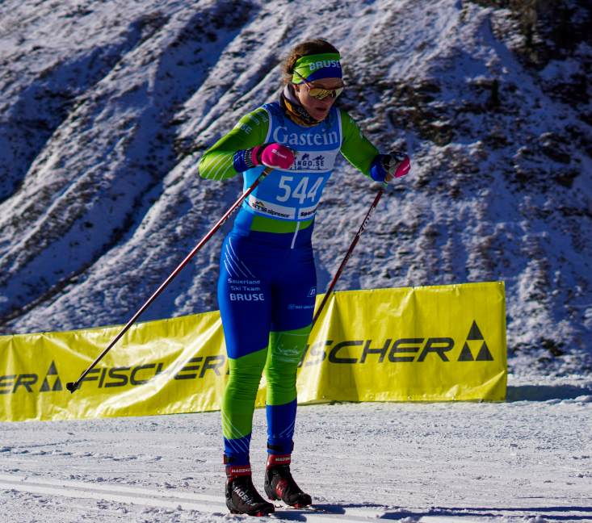

Längdskidor och långlopp
Jag började åka skidor i vuxen ålder men när jag väl började, då föll jag pladask för sporten!
Numera åker jag för ett tyskt lag som heter Bruse Sauerland Ski Team.

Alexandras utveckling
| Lopp | År | Placering | Tid |
|---|---|---|---|
| Tjejvasan | 2022 | 103 | 1:33:12 |
| 2023 | 87 | 1:37:33 | |
| 2024 | 55 | 1:30:29 | |
| 2025 | 27 | 1:28:22 | |
| 2026 | 24 | 1:32:32 |
